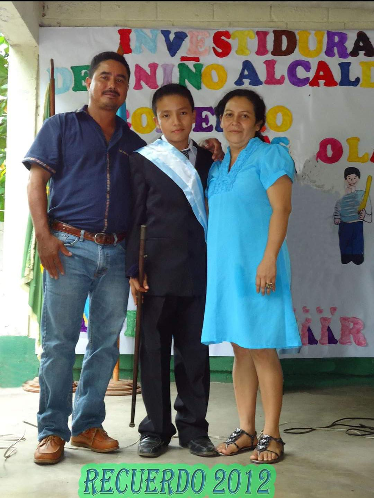

Hola! bienvenido, te contare algo sobre mi niñez.
Naci en La Cuidad de Guatemala en el iggs de pamplona el 21 de enero de 2000 y vivi alli 5 años, pero por cosas de la vida me tuve que mudar para La Democracia Escuintla, donde vivia mi abuela maternal
a la edad de 5 años hasta la edad de 6 años vivimos con ella ya que ella fallecio, despues de eso nos mudamos con nuestros padres para una casa que ellos con sus esfuerzos hicieron, vivimos serca de mi abula paternal,
y la demas familia igual por parte de mi papa, y pues fue maravilloso ya que todos los primos nos reuniamos alli a jugar pelota, bote bote y un monton de juegos mas, era feliz y era emocionante todo,
me gustaban mucho los animales en especial la avicultura, el manejo de aves desde los 12 años y aun hasta la fecha me sigue apacionando la crianza de gallinas y pollos de engorde.
tengo tres hermanos yo soy el mayor
A partir de los 7 años en adelante comence a estudiar, me gradue de primaria a los 12 años con honores, entre a basicos a los 13 años pero alli me enamore y baje en mis calificaciones, pero no perdi ningun año,
me gradue de basicos a los 15 años. Luego segui con la carrera de bachiller en computacion con orientacion comercial a los 16 y me gradue a los 17 años, aprendi a manejar carros y moto a los 8 años y camion a los 9 años cuando iba por la calle decian
alli va el carro fantasma por que no me miraba XD, comence a laborar para una empresa formalmente a mis 20 años, la empresa se llama INGENIO MAGDALENA y alli gracias a Dios actualmente trabajo.
Aca les dejo una foto de cuando fui niño alcalde
